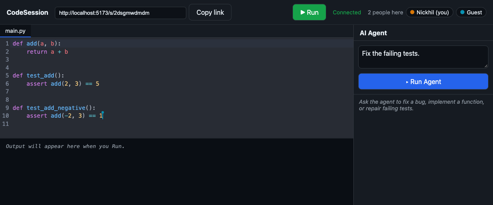

- Started a high-yield savings platform and built it end to end with Node, Express, PostgreSQL, React and Next.js. It reached 100K+ users.
- Wrote Python and Node scraping pipelines that kept rates current across 50+ banks.
- Deployed on Google Cloud with containerized builds.
Nickhil Pattikonda
I build products people use and see them through, from the idea to the launch and what comes after. I founded Wydget (100K+ users), shipped checkout flows at Cardlift that lifted conversion by 35%, and open-sourced a tool at Cloudflare that 10K+ developers use. I study computer science at UT Austin.
- Shipped
- School
- Ahead
Aug 2023 to todayPoint at or tab to a row to read it. Select one to jump to the full story.
Work
- Shipped One Tap Checkout with personalized affiliate offers, lifting purchase conversion by 35%.
- Built the FastAPI, PostgreSQL and Redis services behind the checkout flows, improving checkout retention by 40%.
- Made the Chrome extension find checkout elements on 50K+ merchant sites with in-browser TensorFlow.js inference and DOM traversal, generating site-specific selectors to inject the checkout UI.
I built and open-sourced Local Workers Observability in workers-sdk, a tool more than 10K developers now use. It shows what a Worker did, as a waterfall you can read while developing locally, and exposes the same data over MCP so coding agents can read it too.
- Re-architected internal C++ ingestion services for log and invocation workloads handling over 1B events a day.
- Fixed a sampling-recovery bug so ingestion recovers on its own after throttling at event rates above 5B.
- Built TypeScript requests-per-second analytics and latency heatmaps that cut diagnosis time by more than half.
University of Texas at Austin, B.S. Computer Science, expected May 2028. Coursework in data structures and algorithms, object-oriented programming, computer architecture, operating systems and information security.
Study abroad at the National University of Singapore, fall 2026.
Projects
Three things I took from an idea to something that runs, and a few smaller ones.
Share a link, edit with live cursors, press Run, and everyone sees the output. It’s for anyone who wants to code together without installing anything. Edits from many people converge through Yjs CRDTs, and if you refresh or your wifi drops you rejoin without losing a change.

The creative part is the agent. Instead of pasting suggestions into a chat, it joins the shared document as one more collaborator: it reads the project, makes its edits where everyone can watch, runs the tests in the sandbox, and keeps iterating until they pass or it runs out of budget.
I built it in three shippable phases: collaboration first, then sandboxed execution, then the agent. Python runs in locked-down Docker containers with CPU, memory and process limits, a timeout, no network and a read-only filesystem, and the output streams to every client.
Replay of a recorded agent run
- pytest runs before the agent starts and fails
- The agent reads the test and the source file
- The agent edits src/calc.py through the shared document
- pytest runs again in the sandbox and passes
- EditorReact, CodeMirror, Yjs
- Session serverNode: sync, presence, 24h expiry
- AI agentedits the shared doc, runs pytest
- SandboxGo + Docker, warm pool
- 72% of 60 benchmark tasks solved by the agent, in a median of 2 iterations
- 130 → 59 ms to first output, with a warm container pool
- 4 of 4 hostile snippets contained: infinite loop, memory bomb, network access, fork bomb
Plenty of UT students have a skill someone else on campus would pay for: tutoring, haircuts, repairs, commissions. Peerch gives that a place: you sign up with your UT email, post what you offer or what you need, browse what others posted, and pay through the app.
I built the whole stack and shipped it for web and mobile: the React and TypeScript front end, Supabase for sign-in and the PostgreSQL data, search across listings, and Stripe for payments.
- Web and mobile appReact, TypeScript, Tailwind
- Supabasesign-in, PostgreSQL, search
- Stripepayments
A tracing platform for engineers debugging services that call each other. Its web UI, served by the query service, lists every service with its p50, p95 and p99 latency, draws the dependency graph between them, and opens any trace as a nested waterfall.

Storing every span is expensive, and most of them are boring. TraceForge decides what to keep only after it has seen a whole trace. Spans go through Kafka keyed by trace ID, so one sampler sees every span of a trace even when they arrive out of order. It keeps every slow or failed trace and drops the rest.
Replay of the sampler on a recorded run
Traces arriving
Press play to watch traces arrive and the sampler keep or drop each one, or pick a trace once it appears.
Waterfall
- CollectorOTLP over gRPC and HTTP
- Kafkakeyed by trace ID
- Samplertail-based, rebuilds traces
- Writerbatched async inserts
- ClickHousematerialized views
- Query API + UIwaterfall, latency, dependencies
- 260K+ spans per second across 5 services
- 86% fewer spans stored, keeping every slow or failed trace
- <10 ms p95 query time
Smaller things
- AIReaderProject: paste messy business requirements and get a structured app spec (entities, roles, permissions, workflows) as JSON, plus a review with a quality score and clarifying questions. Next.js and OpenAI structured outputs.
- TamuhacksDion: a college events app built at TAMUhack 2025 with React and Firebase.
- financeSheetAutomator: a Python tool that turns a company’s Excel project and finance sheets into daily invoicing summaries and keeps its quarterly year-to-date sheets current.
Tools I use
- Languages
- Python, Go, TypeScript and JavaScript, Java, C and C++, SQL, HTML and CSS
- Frameworks
- React, Node, Express, FastAPI, TensorFlow, PyTorch, pandas, NumPy
- Infrastructure
- AWS, GCP, Azure, Terraform, PostgreSQL, ClickHouse, MongoDB, Redis, Kafka, Firebase
- Day to day
- Git, Docker, CI/CD, OpenTelemetry, Grafana, Sentry